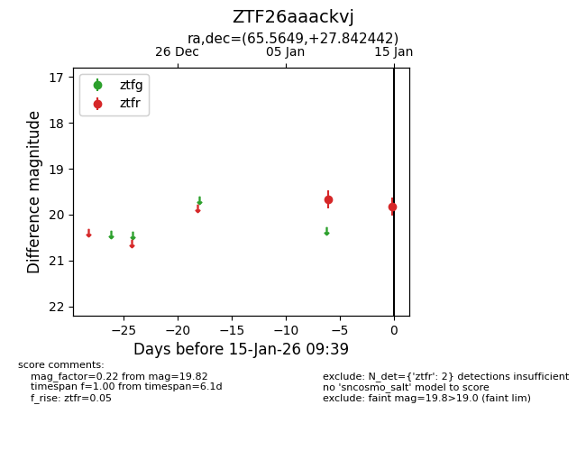
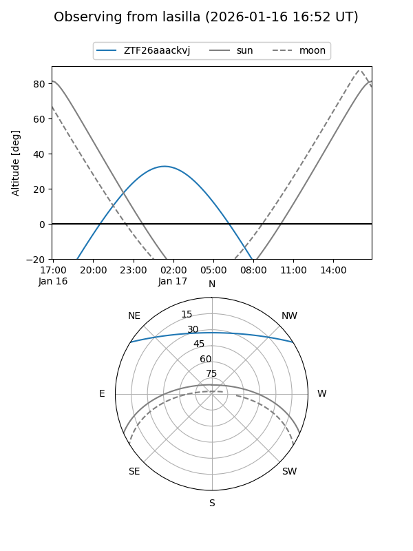
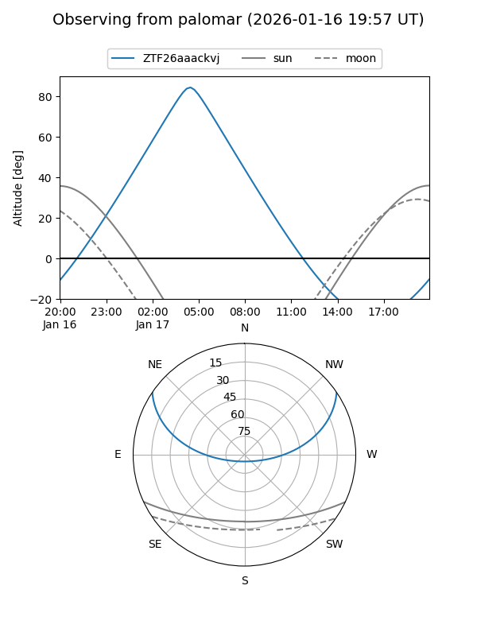

ZTF26aaackvj
Target ZTF26aaackvj at 2026-01-17 09:40
Aliases and brokers:
FINK: link
Lasair: link
ALeRCE: link
alt names
ZTF26aaackvj (ztf,fink_ztf)
Coordinates:
equatorial (ra, dec) = 65.5649,+27.84244
equatorial (HMS+DMS) = 04:22:15.57,+27:50:32.79
galactic (l, b) = (169.7582,-15.29954)
Flags:
Photometry:
last ztfr=19.82
2 ztfr detections
Lightcurve

Visibility


Additional plots